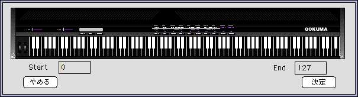
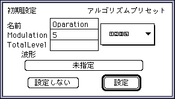
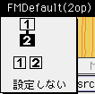
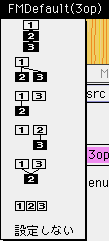
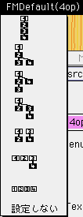
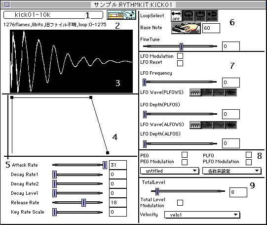
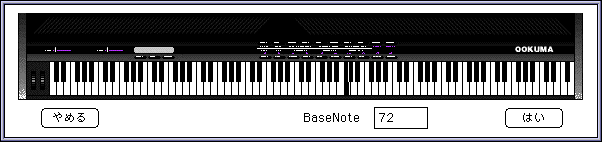

★SOUND Manual
★トーンエディタユーザーズマニュアル/
★SOUND Manual
★トーンエディタユーザーズマニュアル/
▲
戻る｜
進む▼
トーンエディタユーザーズマニュアル
７．各ダイアログについての詳細
- ●ボイス入力ダイアログ
- ボイスウインドウをクリックしたときに出現します。データの入力やレイヤーウ
インドウの呼び出しはすべてこのダイアログから行われます。

- ＜各ダイアログアイテムについて＞
- ◆Layer（No項目）ボタン
- レイヤーウインドウを呼び出します。後述するPCM<>FM切り替えボタンにより
レイヤー属性が決まってきます。
- ・VoiceName
- ボイスの名前です。半角31文字まで入力可能です。
ただしウインドウに表示されるのは半角で18文字全角で9文字までです。
- ・BendRange
- ・Portament
- ・VolumeBias
- スライダーのつまみの移動で任意に、バーの部分で後述する初期設定で設定された移動幅で値を設定できます。
- ◆ayerNoボタン
- レイヤーウインドウを開かずにレイヤー数を増やすことができます。ただし減らすことはできません。
- ◆CM<>FM切り替えボタン
- ボイス属性を決定します。
このボタンを押すと表示がPCM<>FMと入れ替わります。
- ・Size
- このバンクのサイズを表示します。この項目はエディットできません。
- ●レイヤー入力ダイアログ
- ボイスの属性がPCMだった場合のレイヤーウインドウの入力用ダイアログです。
レイヤーウインドウをクリックした際に出現します。

- ＜各ダイアログアイテムについて＞
- ◆Para(No項目)ボタン
- レイヤーパラメータウインドウを呼び出します。
- ・FM項目
- ・Option項目
- 将来のための空き領域です現在は何も設定されていません。
- ・Start&End
- キースプリットの範囲を設定します。中央のボタンを押すと以下のよう
な鍵盤が表示されグラフィカルにキースプリットを設定できます。

- この例ではキースプリットの範囲が0-127に設定されていますのですべての鍵
盤が選択状態になっています。
- ・その他のパラメータ
- 使い方は前述したボイス入力ダイアログと同じです。
- ●FMレイヤーでの設定
- ボイスがFM属性でレイヤーウインドウを展開する前にレイヤー数が2〜4個だと
FMの結線について初期設定が行われます。初期設定を行うために以下のようなダイアログが表示されます。

- ＜各項目についての詳細＞
- ◆名前
- 各モジュレター＆キャリアーにつける名前の基本形でこれに番号がついた名前が実際に付けられます。
- 例 Oparation 1、Operation 2、などなど
- ◆Modulation
- モジュレーションの数値を設定します。この数値を０に設定しても結線そのものは行います。
- ◆TotalLevel
- トータルレベルの設定をします。
- ●アルゴリズムプリセット
- アルゴリズムの結線の仕方を選択します。レイヤーの数にしたがい選択できるアルゴリズムの種類が変化します。



- 白がキャリアーで黒がモジュレターです。
これらを選択すると結線及びレイヤーウインドウ内での各データの位置がプリセットされます。
- ◆波形ボタン
- すべてのモジュレーター＆キャリアーにここで選択された波形をセットします。
- ◆設定＆設定しない
- これらの設定を有効にするか否かを決定します。
- ●レイヤーパラメータウインドウ
- レイヤーウインドウ、FMレイヤーウインドウから呼び出されるレイヤーデータの詳細を設定するウインドウです。

- ＜各項目についての詳細＞
- １：波形ボタン
- 左上にオフセットされているボタンです。PCMのもとの波形となる波形データを取り込みます。
- ボタン
- 取り込まれている波形データを簡易再生します。
ただしYAMAHA製トーンエディターから取り込まれたファイルには再生レート
の記述がなされていないので44.1kHzで再生されます。
ループ再生は現在対応していません。
- ２：波形情報
- 選択されている波形の情報が「フレーム数」「ビット長」「サンプリングレート」、
「ループ範囲」を示しています。ただし YAMAHA製のトーンエディターから取
り込まれたファイルには再生レートの記述がありませんのでその場合には「旧ファ
イル不明」と言う表示をします。
- ３：波形データのイメージ
- 波形データのイメージを表示します。白黒反転部分はループ領域を示しています。
- ４：EGイメージ
- 設定されたパラメータを簡易イメージで表示してあります。各ポイントを示す
「■」をドラッグしてパラメータを操作できます。
- ５：EG設定
- スライダーとテキスト入力を使ってEGの設定を行います。イメージとこの項目は連動しています。
- ６：ループとキーに関する設定
- ループボタン
- ループを行いません。
- ループ設定のStartからEndへループ再生します。
- ループ設定のEndからStartへループ再生します。
- ループ設定のStart、End、Startと行ったり来たりの再生をします。
- ベースノートボタン（）
- 周波数設定に対するベースノートを設定します。
ベースノートの設定は直接数値を入力する方法とボタンを押して設定する方法が
あります。設定ボタンを押すと以下のようなダイアログが表示されます。

- キースプリットの設定と違い複数のキーが選べないことをのぞけば使い方はキースプリットと同じです。
- ７：LFO関係パラメータ
- スライダーテキストデータ入力の部分の使い方は前述しているボイス入力ダイアログで説明しているのでそちらを参照してください。
LFO Waveの設定についてのボタンは以下の通りです。
- ノコギリ波
- 矩形波
- 三角波
- ノイズ
- ８：PEG関係パラメータ
- ９：TotalLevel関係のパラメータ
- ポップアップメニューの各設定は後述する「設定」メニューで設定できるテーブルが割り当てられます。
▲
戻る｜
進む▼
★SOUND Manual
★トーンエディタユーザーズマニュアル/
Copyright SEGA ENTERPRISES, LTD., 1997